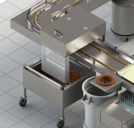
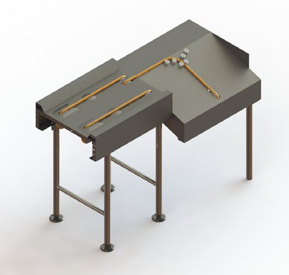
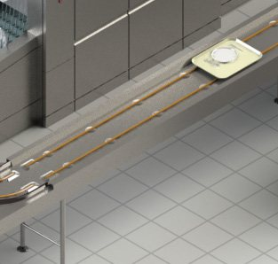

Les incontournables
« Les traditionnels » : équipements complémentaires simples et efficaces.

Pour l’acheminement de la vaisselle de la salle à manger vers la laverie, comme pour le triage, un certain nombre de produits Sopacom sont indispensables, quelle que soit la technique utilisée.
La gamme « les traditionnels » regroupe des solutions simples et efficaces qui s’adaptent aux besoins, conçues par des professionnels et construites pour durer.
Objectif : personnalisation et performance.
Depuis 2004, pour répondre aux petites installations et aux renouvellements de dernière minute, une ligne de produits standards en stock d’une vingtaine de modèles regroupe notamment des tables lisses avec ou sans bac pour entrée ou sortie machine, des étagères, des tables à rouleaux, des poubelles et des TVO.
Source : Présentation « Environnement laverie mécanisé » (PDF Sopacom)
Seules les informations figurant dans les documentations Sopacom sont reprises. Les points demandés mais non documentés sont signalés « à confirmer ».
| Usage | Acheminement de la vaisselle vers la laverie et triage |
|---|---|
| Gamme | « Les traditionnels » — solutions simples et efficaces, construites pour durer |
| Objectif | Personnalisation et performance |
| Modèles standard en stock | Une vingtaine (source : historique du site actuel, 2004) |
| Exemples | Tables lisses avec ou sans bac, étagères, tables à rouleaux, poubelles, TVO |
| À confirmer | Liste à jour des modèles en stock : à fournir par Sopacom. |
Source : Présentation « Environnement laverie mécanisé » (PDF Sopacom)
Les incontournables en situation.



S’intégrer à l’ensemble de la laverie.
Tri sélectif
Tables de tri mobiles et blocs de tri.
Source : Fiche Technicord (PDF Sopacom)
En savoir plus →Sortie machine
Tables lisses avec ou sans bac, tables à rouleaux.
Source : Site actuel sopacom-industrie.fr
En savoir plus →Petites installations
Modèles standards disponibles en stock.
Source : Site actuel sopacom-industrie.fr